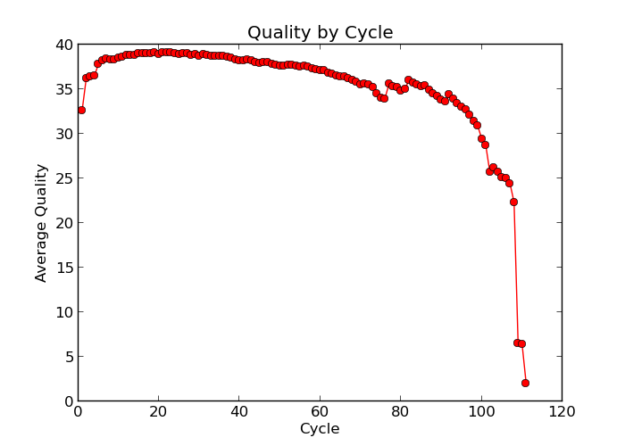
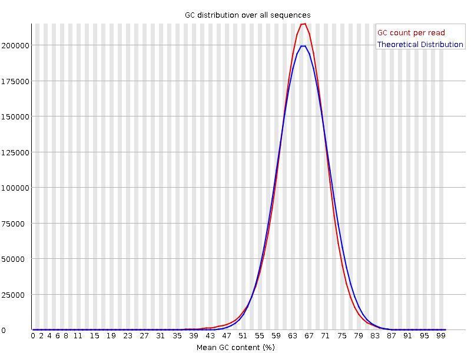
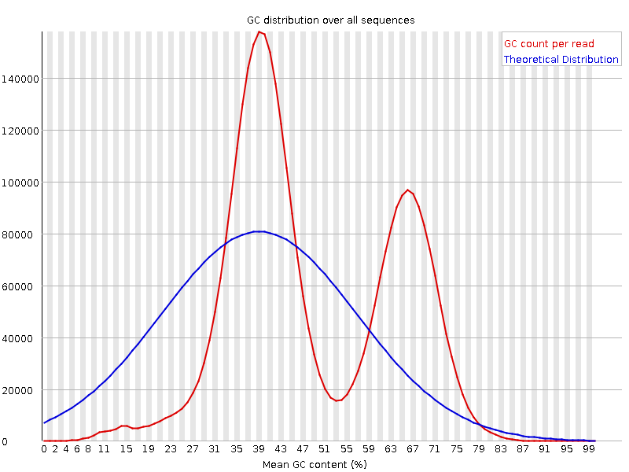
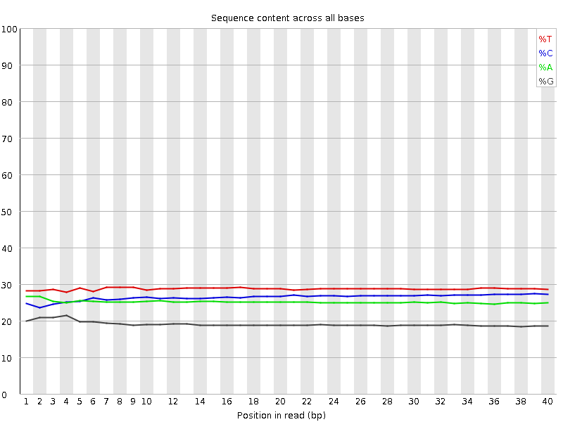
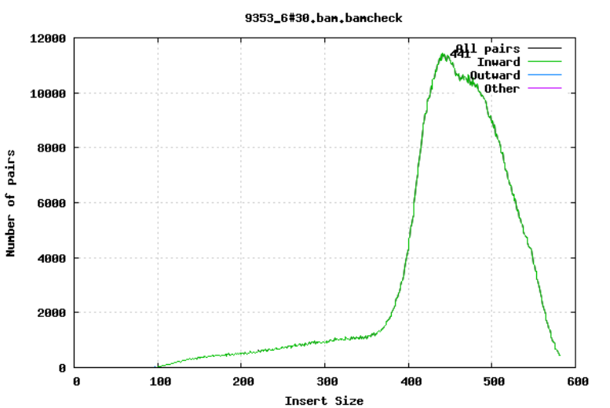
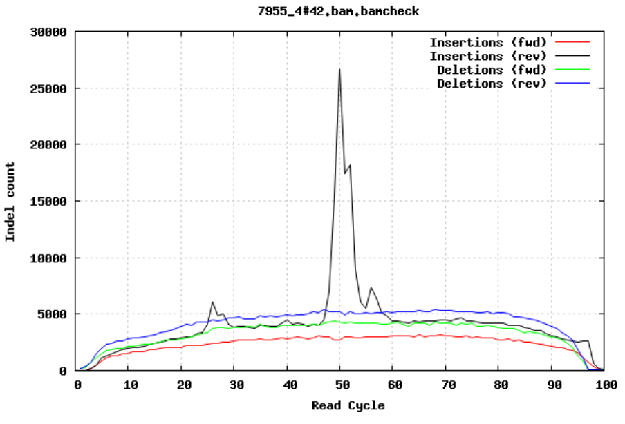
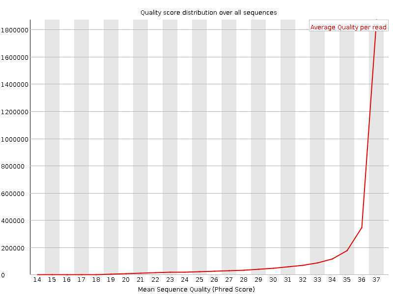
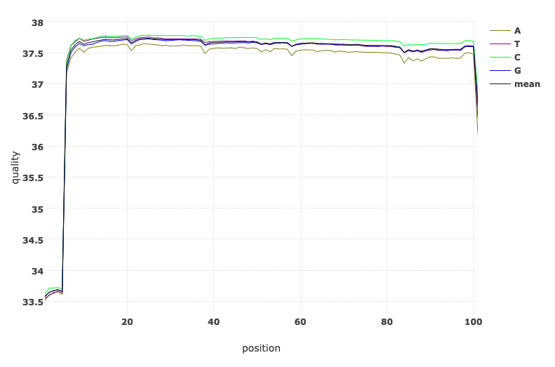
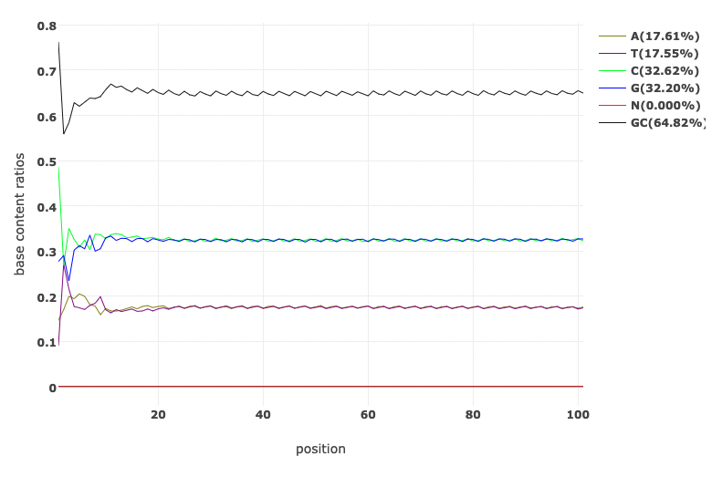
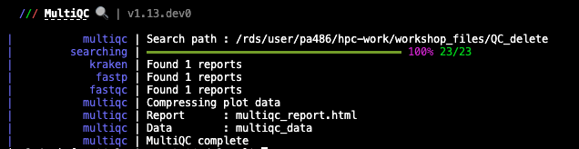

4.1 Sequencing Quality Control
Teaching: 90 min || Exercises: 20 min
Overview
4.1.1 Background
Before we delve into having a look at our own genomic data. Lets take some minutes to explore what to look out for when performing Quality Control (QC) checks on our sequences. For this course, we will largely focus on next generation sequences obtained from Illumina sequencers. As you may already know from the previous lesson, the main output files expected from our Illumina sequencer are .fastq files.
QC assessment of NGS data
As you may already know, QC is an important part of any analysis. In this section we are going to look at some of the metrics and graphs that can be used to assess the QC of NGS data.
Base quality
Illumina sequencing technology relies on sequencing by synthesis. One of the most common problems with this is dephasing. For each sequencing cycle, there is a possibility that the replication machinery slips and either incorporates more than one nucleotide or perhaps misses to incorporate one at all. The more cycles that are run (i.e. the longer the read length gets), the greater the accumulation of these types of errors gets. This leads to a heterogeneous population in the cluster, and a decreased signal purity, which in turn reduces the precision of the base calling. The figure below shows an example of this.

Because of dephasing, it is possible to have high-quality data at the beginning of the read but really low-quality data towards the end of the read. In those cases you can decide to trim off the low-quality reads, for example using a tool called Trimmomatic. In this workshop, we will do this using the tool fastp. In addition to trimming low quality reads, fastpwill also be used to trim off Illumina adapter/primer sequences.
The figures below shows an example of a high-quality read data (left) and a poor quality read data (right).


Base Quality Comparison
In addition to Phasing noise and signal decay resulting from dephasing issues described above, there are several different reasons for a base to be called incorrectly. You can lookup these later by clicking here.
Mismatches per cycle
Aligning reads to a high-quality reference genome can provide insight to the quality of a sequencing run by showing you the mismatches to the reference sequence. This can help you detect cycle-specific errors. Mismatches can occur due to two main causes, sequencing errors and differences between your sample and the reference genome, which is important to bear in mind when interpreting mismatch graphs. The figures below show an example of a good run (top) and a bad one (bottom). In the first figure, the distribution of the number of mismatches is even between the cycles, which is what we would expect from a good run. However, in the second figure, two cycles stand out with a lot of mismatches compared to the other cycles.


GC bias
It is a good idea to compare the GC content of the reads against the expected distribution in a reference sequence. The GC content varies between species, so a shift in GC content like the one seen below (right image) could be an indication of sample contamination. In the left image below, we can see that the GC content of the sample is about the same as for the theoretical reference, at ~65%. However, in the right figure, the GC content of the sample shows two distribution, one is closer to 40% and the other closer to 65%, indicating that there is an issue with this sample — a possible missed sample. Note that, suspecting contamination is perfectly fine for the species we are dealing with (MTBC). For other bacteria where there may be possibility of gene transfer, one can imagine that, such a situation may be from inheriting some plasmids that have a totally different GC content to the bacteria chromosome (This is arguable though).


Figure: Base Quality Comparison
GC content by cycle
Looking at the GC content per cycle can help detect if the adapter sequence was trimmed. For a random library, it is expected to be little to no difference between the different bases of a sequence run, so the lines in this plot should be parallel with each other like in the first of the two figures below. In the second of the figures, the initial spikes are likely due to adapter sequences that have not been removed.


Insert size
For paired-end sequencing the size of DNA fragments also matters. In the first of the examples below, the insert size peaks around 440 bp. In the second however, there is also a peak at around 200 bp. This indicates that there was an issue with the fragment size selection during library prep.


Insertions/Deletions per cycle
Sometimes, air bubbles occur in the flow cell, which can manifest as false indels. The spike in the second image provides an example of how this can look.


In addition to the QC plots you’ve encountered so far, there are other metrics that are generated with very powerful tools. For this workshop, we will explore these quality metrics with the help of fastq-scan and FastQC tools. It is often not a good practice to carry on analysis on samples that are contaminated with sequences from other species. We will identify contamination using either one of two ways. As earlier mentioned, the GC content varies between species, so a shift in GC content could be an indication of sample contamination. One other way of identifying sample contamination is by using specialized tools to determine/predict the species composition of your sample. For this course, we will determine species composition using the Kraken 2 database.
4.1.2 Change to the QC directory and activate the qc environment
Before we start, change into the QC/ directory and activate the qc environment:
cd ~/Desktop/workshop_files_Bact_Genomics_2023/04_QC/mamba activate qc4.1.3 Generating QC stats and metrics
We are now ready to explore some quality metrics on our sequence data.
This tutorial uses fastq-scan, FastQC, fastp, Kraken 2, Bracken and MultiQC, which have been preinstalled for you in a virtual environment called qc. This is to help speed up the pace of the workshop. You can lookup the setup page for how to install these tools later. In a latter chapter of the course, you will also be introduced to how to set up these virtual environments and explore its usefulness. For each tool, to get help messages that describe how they are used, you can simply type the name of the tool and hit enter. This only works if you activate the environment in which the tools have already been installed. Alternatively, you can use the help flag -help or -h as appropriate.
Disk Usage I — Before analysis
Before we start investigating our genomic sequences, let’s pause and check the space of our current working directory.
You can do this with the disk usage du command
du -hCurrent Disk Space In QC Directory
~1.3GNow, keep this value in mind, we will come back to it at the end of the chapter.
fastq-scan
fastq-scan reads a FASTQ from STDIN and outputs summary statistics (read lengths, per-read qualities, per-base qualities) in JSON format.
You can now go ahead and perform the fastq-scan with the below command.
Try this command out first. You may have to add < after the zcat command depending on your OS. zcat works differently with different OS.
Do this to run the forward reads:
zcat G26832_R1.fastq.gz | fastq-scan -g 4300000 > G26832_R1_fastq-scan.jsonAnd for the reverse reads:
zcat G26832_R2.fastq.gz | fastq-scan -g 4300000 > G26832_R2_fastq-scan.jsonYou should now see two new files generated in your current directory.
To see if the files have been created, use this command:
To view the statistics for the forward reads use this command:
cat G26832_R1_fastq-scan.jsonThe file created is rather small, so you can afford to use cat to view the entire content. You may want to use head or less for huge files.
As you may have realized, the content of the output file doesn’t look friendly.
Let’s convert the .json files into a more friendly format, say tsv. You should know what tsv files are by now. If not, you can go back to the previous chapter on file-formats to equip yourself.
Parse json files into tsv format
We will run a simple python script to achieve this purpose. In your working directory, you will find a file named fastq-scan_parser.py. This is a simple python script that will do the job for us.
We can go ahead and execute that python script by running the command below:
python fastq-scan_parser.pyYou should now see another file generated in your directory called fastq-scan_summary.tsv. What the python script did was to extract the relevant information from all .json files in the working directory and convert them to a tsv file.
Now let’s go ahead and have a look at the tsv file with the command
cat fastq-scan_summary.tsvsample total_bp coverage read_total read_min read_mean read_std read_median read_max read_25th read_75th qual_min qual_mean qual_std qual_max qual_median qual_25th qual_75th
G26832_R1 305515607 71.0501 3024907 101 101.0 0.0 101 101 101 101 14 35.2243 3.49844 37 37 35 37Alternatively, you can open the tsv file with any appropriate GUI software (excel or libreoffice)
FastQC
FastQC is a program designed to spot potential problems in high throughput sequencing datasets. It runs a set of analyses on one or more raw sequence files in fastq or bam format and produces a report which summarises the results. It provides a modular set of analyses which you can use to give a quick impression of whether your data has any problems of which you should be aware before doing any further analysis.
FastQC will highlight any areas where the library looks unusual and where you should take a closer look. The program is not tied to any specific type of sequencing technique and can be used to look at libraries coming from a large number of different experiment types (Genomic Sequencing, ChIP-Seq, RNA-Seq, BS-Seq etc etc).
The main functions of FastQC are:
- Import of data from BAM, SAM or FastQ files (any variant)
- Providing a quick overview to tell you in which areas there may be problems
- Summary graphs and tables to quickly assess your data
- Export of results to an HTML based permanent report
- Offline operation to allow automated generation of reports without running the interactive application
You can now go ahead and perform the fastQC with the below command.
Do this to run the forward reads:
fastqc --threads 4 G26832_R1.fastq.gzStarted analysis of G26832_R1.fastq.gz
Approx 5% complete for G26832_R1.fastq.gz
Approx 10% complete for G26832_R1.fastq.gz
Approx 15% complete for G26832_R1.fastq.gz
Approx 20% complete for G26832_R1.fastq.gz
Approx 25% complete for G26832_R1.fastq.gz
...And for the reverse reads:
fastqc --threads 4 G26832_R2.fastq.gzIf you specified an output -o directory then you should look out for that file being created in that directory. For our situation, we didn’t specify any output directory so the result will just be in the current directory. You should now see two new files generated in your current directory.
Hint
Perform a simple ls command with the arguments -lhrt and the last file in the output should be the most recent.
ls -lhrtWe are interested in the one that ends with .html. Go ahead and open it. Being an .html file, it will prefer to open in a browser, and that’s just how we want to make sense out of it.
We have already seen some of the content of the output file from the background to this chapter. However, this time, let’s look at a few more and also with some more details.
Basic Statistics
The first information you encounter is the basic statistics. The Basic Statistics module generates some simple composition statistics for the file analysed.
- Filename: The original filename of the file which was analysed
- File type: Says whether the file appeared to contain actual base calls or colorspace data which had to be converted to base calls
- Encoding: Says which ASCII encoding of quality values was found in this file.
- Total Sequences: A count of the total number of sequences processed. There are two values reported, actual and estimated. At the moment these will always be the same.
- Filtered Sequences: If running in Casava mode sequences flagged to be filtered will be removed from all analyses. The number of such sequences removed will be reported here. The total sequences count above will not include these filtered sequences and will the number of sequences actually used for the rest of the analysis.
- Sequence Length: Provides the length of the shortest and longest sequence in the set. If all sequences are the same length only one value is reported.
- %GC: The overall %GC of all bases in all sequences

Per Base Sequence Quality
The plot shows an overview of the range of quality values across all bases at each position in the FastQ file.

For each position a BoxWhisker type plot is drawn. The elements of the plot are as follows: - The central red line is the median value - The yellow box represents the inter-quartile range (25-75%) - The upper and lower whiskers represent the 10% and 90% points - The blue line represents the mean quality
The y-axis on the graph shows the quality scores. The higher the score the better the base call. The background of the graph divides the y-axis into very good quality calls (green), calls of reasonable quality (orange), and calls of poor quality (red). The quality of calls on most platforms will degrade as the run progresses, so it is common to see base calls falling into the orange area towards the end of a read.
It should be mentioned that there are number of different ways to encode a quality score in a FastQ file. FastQC attempts to automatically determine which encoding method was used, but in some very limited datasets it is possible that it will guess this incorrectly (ironically only when your data is universally very good!). The title of the graph will describe the encoding FastQC thinks your file used.
NB. Results from this module will not be displayed if your input is a BAM/SAM file in which quality scores have not been recorded.
Warning A warning will be issued if the lower quartile for any base is less than 10, or if the median for any base is less than 25.
Failure This module will raise a failure if the lower quartile for any base is less than 5 or if the median for any base is less than 20.
Common reasons for warnings
The most common reason for warnings and failures in this module is a general degradation of quality over the duration of long runs. In general sequencing chemistry degrades with increasing read length and for long runs you may find that the general quality of the run falls to a level where a warning or error is triggered.
If the quality of the library falls to a low level then the most common remedy is to perform quality trimming where reads are truncated based on their average quality. For most libraries where this type of degradation has occurred you will often be simultaneously running into the issue of adapter read-through so a combined adapter and quality trimming step is often employed.
Another possibility is that a warn / error is triggered because of a short loss of quality earlier in the run, which then recovers to produce later good quality sequence. This can happen if there is a transient problem with the run (bubbles passing through a flow cell for example). You can normally see this type of error by looking at the per-tile quality plot (if available for your platform). In these cases trimming is not advisable as it will remove later good sequence, but you might want to consider masking bases during subsequent mapping or assembly.
If your library has reads of varying length then you can find a warning or error is triggered from this module because of very low coverage for a given base range. Before committing to any action, check how many sequences were responsible for triggering an error by looking at the sequence length distribution module results.
Per Sequence Quality Scores
The per sequence quality score report allows you to see if a subset of your sequences have universally low quality values. It is often the case that a subset of sequences will have universally poor quality, often because they are poorly imaged (on the edge of the field of view etc), however these should represent only a small percentage of the total sequences.

If a significant proportion of the sequences in a run have overall low quality then this could indicate some kind of systematic problem - possibly with just part of the run (for example one end of a flow cell).
NB. Results from this module will not be displayed if your input is a BAM/SAM file in which quality scores have not been recorded.
Warning A warning is raised if the most frequently observed mean quality is below 27 - this equates to a 0.2% error rate.
Failure An error is raised if the most frequently observed mean quality is below 20 - this equates to a 1% error rate.
Common reasons for warnings
This module is generally fairly robust and errors here usually indicate a general loss of quality within a run. For long runs this may be alleviated through quality trimming. If a bi-modal, or complex distribution is seen then the results should be evaluated in concert with the per-tile qualities (if available) since this might indicate the reason for the loss in quality of a subset of sequences.Per Base Sequence Content
Per Base Sequence Content plots out the proportion of each base position in a file for which each of the four normal DNA bases has been called.

In a random library you would expect that there would be little to no difference between the different bases of a sequence run, so the lines in this plot should run parallel with each other. The relative amount of each base should reflect the overall amount of these bases in your genome, but in any case they should not be hugely imbalanced from each other.
It’s worth noting that some types of library will always produce biased sequence composition, normally at the start of the read. Libraries produced by priming using random hexamers (including nearly all RNA-Seq libraries) and those which were fragmented using transposases inherit an intrinsic bias in the positions at which reads start. This bias does not concern an absolute sequence, but instead provides enrichment of a number of different K-mers at the 5’ end of the reads. Whilst this is a true technical bias, it isn’t something which can be corrected by trimming and in most cases doesn’t seem to adversely affect the downstream analysis. It will however produce a warning or error in this module.
Warning This module issues a warning if the difference between A and T, or G and C is greater than 10% in any position.
Failure This module will fail if the difference between A and T, or G and C is greater than 20% in any position.
Common reasons for warnings
There are a number of common scenarios which would elicit a warning or error from this module.
Overrepresented sequences: If there is any evidence of overrepresented sequences such as adapter dimers or rRNA in a sample then these sequences may bias the overall composition and their sequence will emerge from this plot. Biased fragmentation: Any library which is generated based on the ligation of random hexamers or through tagmentation should theoretically have good diversity through the sequence, but experience has shown that these libraries always have a selection bias in around the first 12bp of each run. This is due to a biased selection of random primers, but doesn’t represent any individually biased sequences. Nearly all RNA-Seq libraries will fail this module because of this bias, but this is not a problem which can be fixed by processing, and it doesn’t seem to adversely affect the ability to measure expression. Biased composition libraries: Some libraries are inherently biased in their sequence composition. The most obvious example would be a library which has been treated with sodium bisulphite which will then have converted most of the cytosines to thymines, meaning that the base composition will be almost devoid of cytosines and will thus trigger an error, despite this being entirely normal for that type of library If you are analysing a library which has been aggressively adapter trimmed then you will naturally introduce a composition bias at the end of the reads as sequences which happen to match short stretches of adapter are removed, leaving only sequences which do not match. Sudden deviations in composition at the end of libraries which have undergone aggressive trimming are therefore likely to be spurious.Per Base N Content
If a sequencer is unable to make a base call with sufficient confidence then it will normally substitute an N rather than a conventional base] call
This module plots out the percentage of base calls at each position for which an N was called.

It’s not unusual to see a very low proportion of Ns appearing in a sequence, especially nearer the end of a sequence. However, if this proportion rises above a few percent it suggests that the analysis pipeline was unable to interpret the data well enough to make valid base calls.
Warning This module raises a warning if any position shows an N content of >5%.
Failure This module will raise an error if any position shows an N content of >20%.
Common reasons for warnings
The most common reason for the inclusion of significant proportions of Ns is a general loss of quality, so the results of this module should be evaluated in concert with those of the various quality modules. You should check the coverage of a specific bin, since it’s possible that the last bin in this analysis could contain very few sequences, and an error could be prematurely triggered in this case.
Another common scenario is the incidence of a high proportions of N at a small number of positions early in the library, against a background of generally good quality. Such deviations can occur when you have very biased sequence composition in the library to the point that base callers can become confused and make poor calls. This type of problem will be apparent when looking at the per-base sequence content results.fastp
click here to view the publication on fastp fastp is a tool designed to provide fast all-in-one pre-processing for FastQ files.
Features
- comprehensive quality profiling for both before and after filtering data (quality - curves, base contents, KMER, Q20/Q30, GC Ratio, duplication, adapter contents…)
- filter out bad reads (too low quality, too short, or too many N…)
- cut low quality bases for per read in its 5’ and 3’ by evaluating the mean quality - from a sliding window (like Trimmomatic but faster).
- trim all reads in front and tail
- cut adapters. Adapter sequences can be automatically detected, which means you don’t have to input the adapter sequences to trim them.
- correct mismatched base pairs in overlapped regions of paired end reads, if one base is with high quality while the other is with ultra low quality
- trim polyG in 3’ ends, which is commonly seen in NovaSeq/NextSeq data. Trim polyX in 3’ ends to remove unwanted polyX tailing (i.e. polyA tailing for mRNA-Seq data)
- preprocess unique molecular identifier (UMI) enabled data, shift UMI to sequence name.
- report JSON format result for further interpreting.
- visualize quality control and filtering results on a single HTML page (like FASTQC - but faster and more informative).
- split the output to multiple files (0001.R1.gz, 0002.R1.gz…) to support parallel - processing. Two modes can be used, limiting the total split file number, or limiting the lines of each split file.
- support long reads (data from PacBio / Nanopore devices).
- support reading from STDIN and writing to STDOUT
- support interleaved input
- support ultra-fast FASTQ-level deduplication
You can now go ahead and perform the fastp with the below command. We will perform the run on both reads.
fastp --cut_front --cut_tail --trim_poly_x --cut_mean_quality 30 --qualified_quality_phred 30 --unqualified_percent_limit 10 --length_required 50 --in1 G26832_R1.fastq.gz --in2 G26832_R2.fastq.gz --out1 G26832_R1.trim.fastq.gz --out2 G26832_R2.trim.fastq.gz --json G26832_fastp.json --html G26832_fastp.html --thread 4 --detect_adapter_for_peDetecting adapter sequence for read1...
>Illumina TruSeq Adapter Read 1
AGATCGGAAGAGCACACGTCTGAACTCCAGTCA
Detecting adapter sequence for read2...
>Illumina TruSeq Adapter Read 2
AGATCGGAAGAGCGTCGTGTAGGGAAAGAGTGT
Read1 before filtering:
total reads: 3024907
total bases: 305515607
Q20 bases: 291946114(95.5585%)
Q30 bases: 278924986(91.2965%)
Read2 before filtering:
total reads: 3024907
total bases: 305515607
Q20 bases: 283844973(92.9069%)
Q30 bases: 265510454(86.9057%)
Read1 after filtering:
total reads: 2042550
total bases: 204034659
Q20 bases: 203578565(99.7765%)
Q30 bases: 202244612(99.1227%)
...You can also read out what is printed out on the terminal as a log file by passing the output to a textfile named fastp.log. This way, you don’t see all the long print out on the terminal.
fastp --cut_front --cut_tail --trim_poly_x --cut_mean_quality 30 --qualified_quality_phred 30 --unqualified_percent_limit 10 --length_required 50 --in1 G26832_R1.fastq.gz --in2 G26832_R2.fastq.gz --out1 G26832_R1.trim.fastq.gz --out2 G26832_R2.trim.fastq.gz --json G26832_fastp.json --html G26832_fastp.html --thread 4 --detect_adapter_for_pe > fastp.logYou should now see four new files generated in your current directory.
G26832_R2.trim.fastq.gz
G26832_R1.trim.fastq.gz
G26832_fastp.json
G26832_fastp.htmlNow let’s go ahead and see what our output looks like by opening the G26832_fastp.html file. You should be able to interpret the output by now.

Let’s have a look at the quality of both reads before and after trimming. What obvious differences do you notice.


Read Quality before and after fastp processing


Base Content Quality before and after fastp processing
4.1.4 Identifying contamination
It is always a good idea to check that your data is from the species you expect it to be. A very useful tool for this is Kraken. In this workshop we will go through how you can use Kraken to check your samples for contamination.
Kraken 2
click here to view the publication on Kraken 2 kraken is a taxonomic sequence classifier that assigns taxonomic labels to DNA sequences. Kraken examines the k-mers within a query sequence and uses the information within those k-mers to query a database. That database maps k-mers to the lowest common ancestor (LCA) of all genomes known to contain a given k-mer.
The first version of Kraken used a large indexed and sorted list of -mer/LCA pairs as its database. While fast, the large memory requirements posed some problems for users, and so Kraken 2 was created to provide a solution to those problems.
To run Kraken 2, you need to provide the path to the database. By default, the input files are assumed to be in FASTA format, so in this case we also need to tell Kraken that our input files are in FASTQ format, gzipped, and that they are paired end reads.
You can now go ahead and run Kraken 2 with the below command.
Take note of these: 1. You have to specify the directory to the database 2. Our input files will be the trimmed fastq sequences from the fastp analysis.
Do this to run Kraken 2:
kraken2 --db ../database/minikraken2_v1_8GB --threads 4 --unclassified-out G26832.unclassified#.fastq --classified-out G26832.classified#.fastq --report G26832.kraken2.report.txt --output G26832.kraken2.out --gzip-compressed --report-zero-counts --paired G26832_R1.trim.fastq.gz G26832_R2.trim.fastq.gzLoading database information... done.
2042550 sequences (407.73 Mbp) processed in 18.212s (6729.3 Kseq/m, 1343.29 Mbp/m).
2038335 sequences classified (99.79%)
4215 sequences unclassified (0.21%)You should now see some new files generated in your current directory. How many new files have been generated? Do you see that the fastq files are unzipped?
You can try to read the two kraken report output text files created, but I’m sure that won’t make real sense to you.
Quick look at Kraken 2 report
Run the command to have a quick look at the Kraken 2 report.
head -n 20 G26832.kraken2.report.txtJust like we did for the fastq-scan output, we will have to convert the Kraken 2 output to a more readable format. Before we do this, we will have to perform one more analysis on our sample. The Kraken 2 often does not provide exhaustive results. To re-estimate taxonomic abundance of the samples we have to do this with another tool called Bracken using the output of Kraken 2.
Bracken
click here to view the publication on Bracken Bracken is a companion program to Kraken 1, KrakenUniq, or Kraken 2 While Kraken classifies reads to multiple levels in the taxonomic tree, Bracken allows estimation of abundance at a single level using those classifications (e.g. Bracken can estimate abundance of species within a sample)
You can now go ahead and perform Bracken with the below command.
Run Bracken with the following command:
bracken -l S -t 10 -d ../database/minikraken2_v1_8GB -i G26832.kraken2.report.txt -o G26832_bracken_S.tsv >> Checking for Valid Options...
>> Running Bracken
>> python src/est_abundance.py -i G26832.kraken2.report.txt -o G26832_bracken_S.tsv -k ../../Analysis/database/minikraken2_v1_8GB/database100mers.kmer_distrib -l S -t 10
PROGRAM START TIME: 11-09-2022 18:28:06
>> Checking report file: G26832.kraken2.report.txt
BRACKEN SUMMARY (Kraken report: G26832.kraken2.report.txt)
>>> Threshold: 10
>>> Number of species in sample: 11780
>> Number of species with reads > threshold: 17
>> Number of species with reads < threshold: 11763
>>> Total reads in sample: 2042550
>> Total reads kept at species level (reads > threshold): 75467
>> Total reads discarded (species reads < threshold): 60
>> Reads distributed: 1962804
>> Reads not distributed (eg. no species above threshold): 4
>> Unclassified reads: 4215
BRACKEN OUTPUT PRODUCED: G26832_bracken_S.tsv
PROGRAM END TIME: 11-09-2022 18:28:06
Bracken complete.You should now see two new files generated in your current directory. You can take a look at them as they are small files. You can already guess what specie we are working with from the G26832_bracken_S.tsv file.
Producing a more friendly species composition file
Imagine you have over 100 samples and have produced Bracken output files for each file using a simple bash script. Ho do you check each individual file to see what species abundance there is? This will be tedious right? How can we make things easier for us? For instance have them all in one .tsv file to examine at a go. Your guess is as good as mine. …Let’s write a script for that.
To do this, we can simply parse all the Kraken 2 and Bracken results into a more friendly .tsv file that summarises all the output into one file. We will achieve this with a simple python script.
Parse Kraken 2 and Bracken results files into tsv format
We will run a simple python script to achieve this purpose. In your working directory, you will find a file named kraken_parser.py. This is a simple python script that will do the job for us.
We can go ahead and execute that python script by running the command below:
python kraken_parser.pyYou should now see another file generated in your directory called Bracken_species_composition.tsv.
Now let’s go ahead and have a look at the tsv file with the command below. Remember, we have run analysis on only one sample and so will expect only one line of results.
Alternatively, you can open the tsv file with any appropriate GUI software (excel or libreoffice)
Now, what if we want to also see all the QC statistics in one go provided we performed the analysis for multiple samples (or in our case even for just one sample).
Thankfully, bioinformaticians are not sleeping, there is one final tool (MultiQC) we will discuss here which puts all that analysis we have performed into a single report that is viewable on a web browser, yes an .html file.
MultiQC
click here to view the publication on MultiQC or check out their website
MultiQC is a tool to create a single report with interactive plots for multiple bioinformatics analyses across many samples.
Reports are generated by scanning given directories for recognised log files. These are parsed and a single HTML report is generated summarising the statistics for all logs found. MultiQC reports can describe multiple analysis steps and large numbers of samples within a single plot, and multiple analysis tools making it ideal for routine fast quality control.
Do this to get the help information for fastq-scan
multiqc -h
You can now go ahead and perform the MultiQC with the below command. We will only add the -f flag which overwrites any existing MultiQC reports.
Perform the analysis with this command:
multiqc -f .
The report is created in multiqc_report.html by default. Tab-delimited data files are also created in a directory called multiqc_data/, containing extra information. These can be easily inspected using Excel.
You should now see two new files generated in your current directory.
Let’s have a quick look the report by simply opening it in a web browser.

We should now know what each plot represent. If you don’t at this point, then you may want to start from the beginning of this document.
4.1.5 QC bash script: Putting it all together
Now let’s try this out! We will generate QC stats for three pairs of reads from Illumina paired-end sequencing. We will perform all the analysis above in one run while generating all the various files at each stage within the pipeline in tandem.
Running multiple samples with a simple bash script
All the fastq files needed for this analysis are located in the current working QC directory. You can have a look by simply running the below command to check out all the forward reads present in the current directory.
Let’s have a look at the QC bash script we are going to run:
cat qcloop.shThe script contains several commands, some are combined together using pipes. (UNIX pipes is a very powerful and elegant concept which allows us to feed the output of one command into the next command and avoid writing intermediate files. If you are not comfortable with UNIX or how scripts look like and how they work, consider having a go at the UNIX tutorial or more specifically bonus shell script.
Now run the script to create the QC stats (this may take a while):
The script will produce all the intermediate and final files we have encountered in this session.
Perform a simple ls command with the arguments -lhrt and view the most recent files created.
ls -lhrtWhich files do you consider most useful?
Now, let’s have a look at the two most important files here — The multiqc_report.html and the Bracken_species_composition.tsv.
If you have successfully gone through the exercise above, congratulations!!! You are a bioinformatics QC expert now.
Now, let’s copy the trimmed genome that we are most confident in to another directory called short_read_mapping. We will carry out our mapping and pseudogenome assembly of short reads from this genome in our next lesson.
Disk Usage II — Cleaning up after analysis
Now that we are done investigating our genomic sequences, let’s pause again and check the space of our current working directory.
You can do this with the disk usage du command
du -hHow much disk space have you used since the start of the analysis? I’m sure it’s more than 4G. That’s fine. Let’s do some cleaning up. We will remove rm all files that we may not need for further analysis. Most of these files are intermediate files and can always be reproduced if we need to.
You will find this cleaning process very useful in the next chapter where we will generate tonnes and tonnes of data.
remove all trimmed fastq files if not needed
rm *trim*remove all classified and unclassified fastq files if not needed
rm *classified*remove all Kraken 2 output if not needed
rm *kraken2.out4.1.6 deactivate qc environment
Now that we are done with all our analysis, let’s deactivate the qc environment:
mamba deactivate4.1.7 Credit
Information on this page has been adapted and modified from the following source(s):
https://github.com/sanger-pathogens/QC-training
https://github.com/rpetit3/fastq-scan
https://www.bioinformatics.babraham.ac.uk/projects/fastqc/
https://github.com/OpenGene/fastp
https://github.com/DerrickWood/kraken2
https://github.com/jenniferlu717/Bracken
https://github.com/ewels/MultiQC